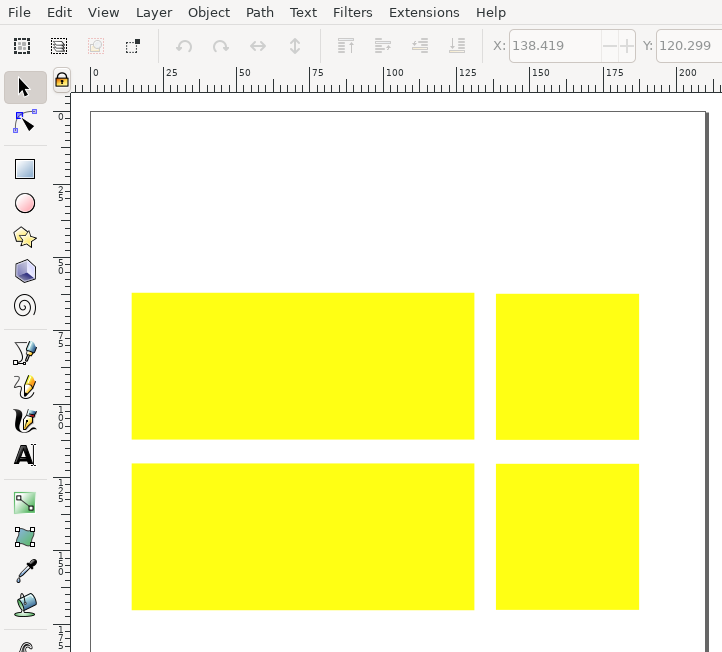
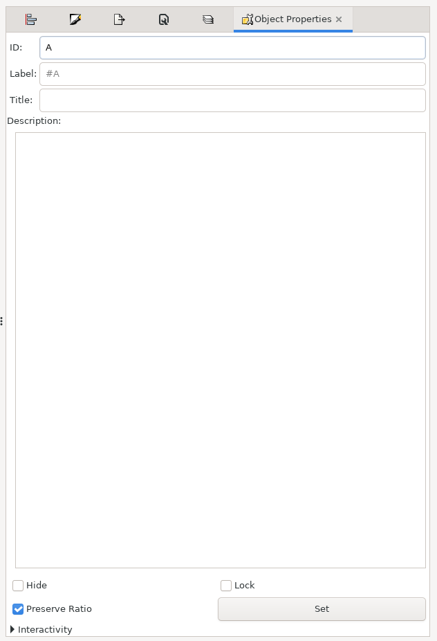
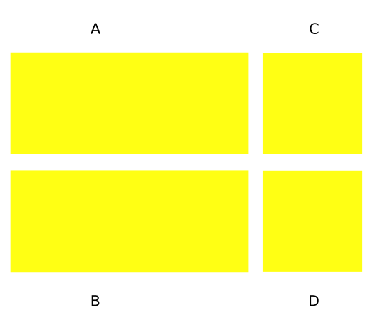
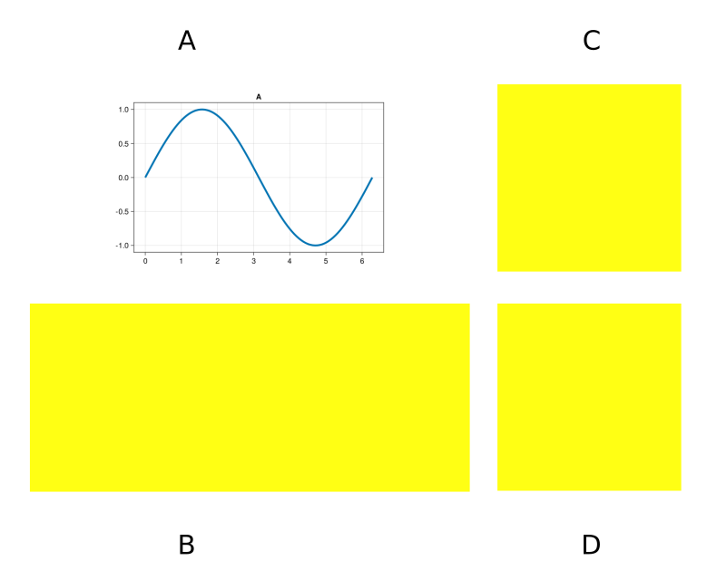
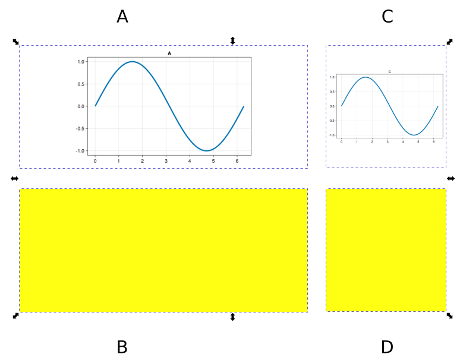
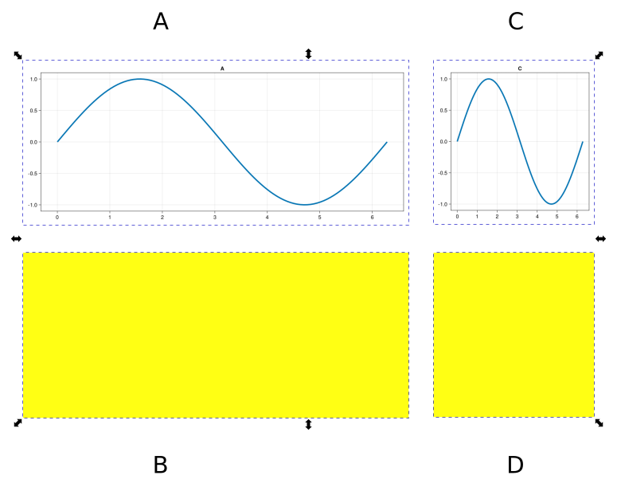
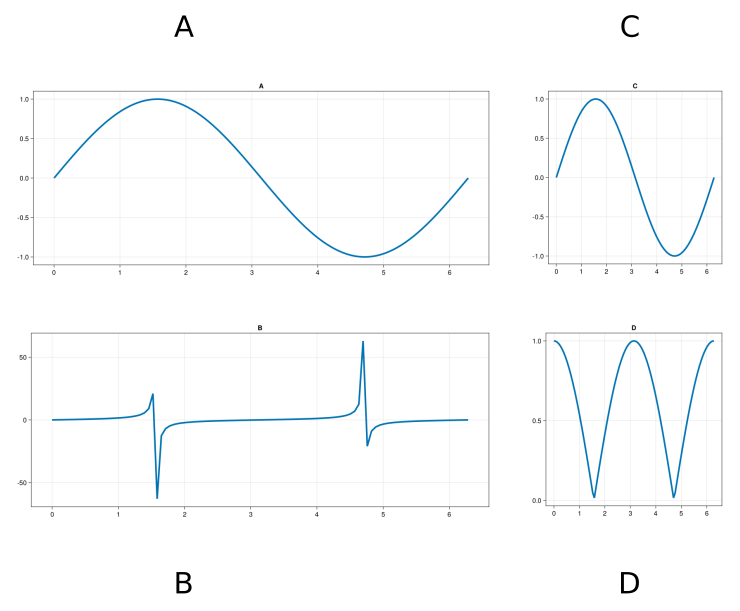
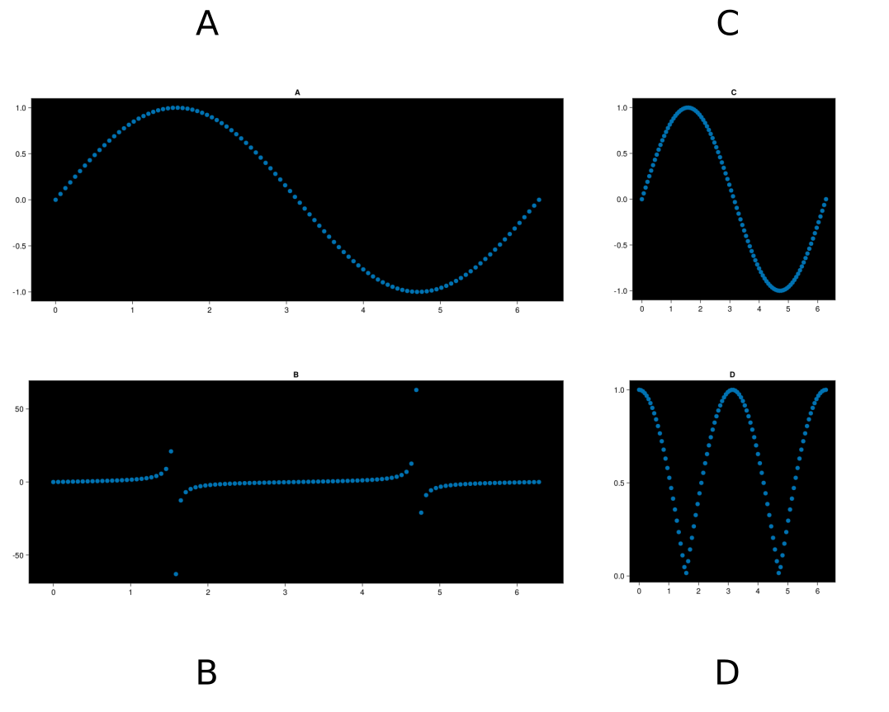
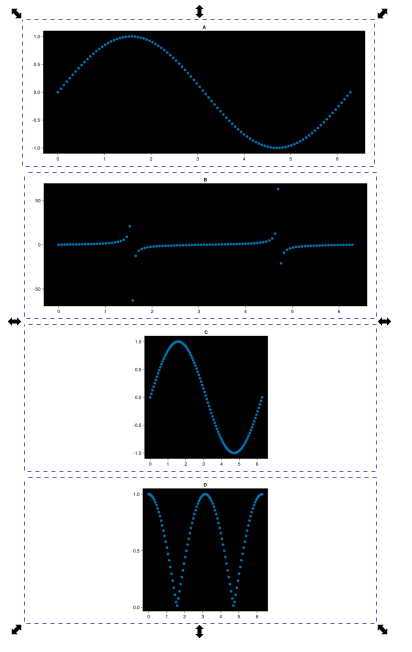
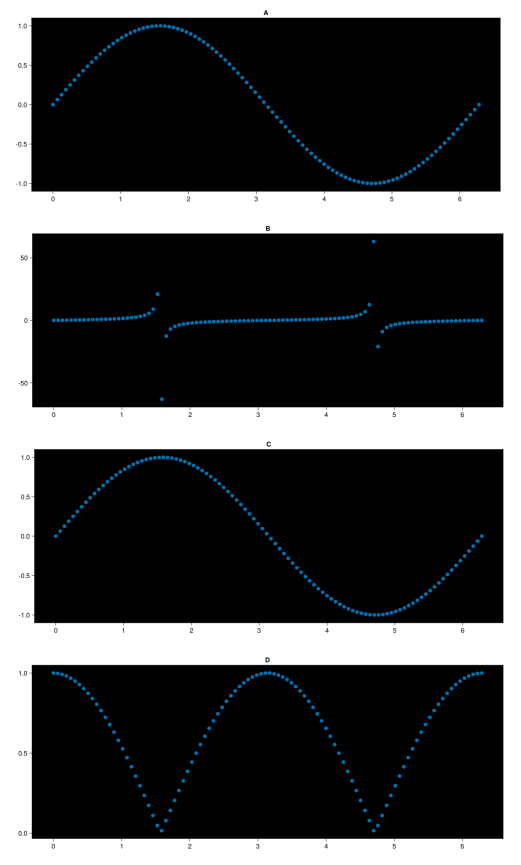

Example
Defining Layout In Inkscape
First, open inkscape and draw some rectangles with the rectangle tool (R):

Right click on each rectangle and click Object Properties

Then, change the label to something memorable and click Set - this will be how you reference each shape from julia. The rectangles in this example are labeled A B C and D as such:

Now open julia and import figure_second and either a Makie library or Plots.jl:
Loading the Inkscape document in Julia
using figure_second
using CairoMakiethen, create an Updater object that holds information on where the inkscape file is on disk. If you are ok with mutating the inkscape file in place, you can do
inkscape = updater("./path/to/file.svg")then, we can find all the ids of the rectangles we just created with ids:
ids(inkscape)
# outputs: ["A" "B" "C" "D"]Plotting into Inkscape
now, lets create general plotting function that we can reuse:
function my_plot(x, y, inkscape::Updater, inkscape_id::String)
# manually set a resolution
res = (600, 400)
fig = Figure(resolution = res, dpi = 200)
ax = Axis(fig[1,1], title = inkscape_id)
lines!(ax, x, y, linewidth=4)
return fig
endand then place some data in the A rectangle for our figure:
x = range(0, 2pi, 100)
A = my_plot(x, sin.(x), inkscape, "A")
# a dictionary of keys (name of inkscape ID) and values
# (figure objects)
mapping = Dict(
"A" => A
)
# write all these figures into the inkscape svg
plot_figures(inkscape, mapping)opening inkscape and going File > Revert, we will force reload inkscape to any changes that have happened in the file. Now the file looks like this:

Lets apply the same process to id C:
x = range(0, 2pi, 100)
A = my_plot(x, sin.(x), inkscape, "A")
# new figure!
C = my_plot(x, sin.(x), inkscape, "B")
# mapping of inkscape ids to figure objects
mapping = Dict(
"A" => A,
"C" => C,
)
# write all these figures into the inkscape svg
plot_figures(inkscape, mapping)
Sizing plots to inkscape layout
it seems that figure_second is not respecting the aspect ratios of the inkscape objects which in turn causes the plots to fill the allocated space poorly. To fix this we can use the relative_dimensions function to calculate a figure resolution that respects the inkscape aspect ratio. Updating our my_plot function:
function my_plot(x, y, inkscape::Updater, inkscape_id::String)
# every figure will have a height of 500, but the width will
# change to respect the aspect ratio of the output
desired_height = 500.
local res = relative_dimensions(inkscape, inkscape_id, desired_height)
fig = Figure(resolution = res, dpi = 200)
ax = Axis(fig[1,1], title = inkscape_id)
lines!(ax, x, y, linewidth=4)
return fig
endre-running the code and reloading the inkscape figure we have the following:

then we can adjust our plotting commands for the other boxes:
x = range(0, 2pi, 100)
A = my_plot(x, sin.(x), inkscape, "A")
C = my_plot(x, sin.(x), inkscape, "C")
B = my_plot(x, tan.(x), inkscape, "B")
D = my_plot(x, abs.(cos.(x)), inkscape, "D")
mapping = Dict(
"A"=> A,
"C"=> C,
"B"=> B,
"D" => D
)
The beauty of figure_second
Lets say we want to change all the line plots to scatter plots, and make all background colors different:
function my_plot(x, y, inkscape::Updater, inkscape_id::String)
# manually set a resolution
local res = (600, 400)
desired_height = 500.
local res = relative_dimensions(inkscape, inkscape_id, desired_height)
fig = Figure(resolution = res, dpi = 200)
# now a black background
ax = Axis(fig[1,1], title = inkscape_id, backgroundcolor=:black)
# now a scatter plot
scatter!(ax, x, y, linewidth=4)
return fig
endour figure now looks like:

Or, what if we moved all the rectangles in our figure:

rerendering in julia:
